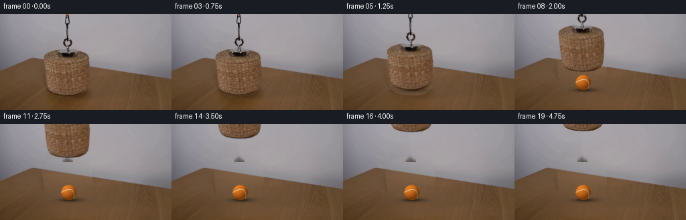
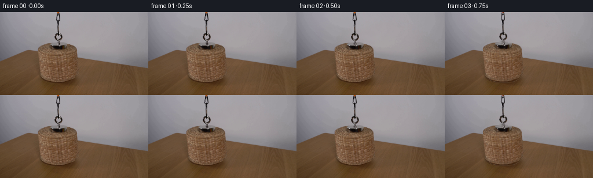
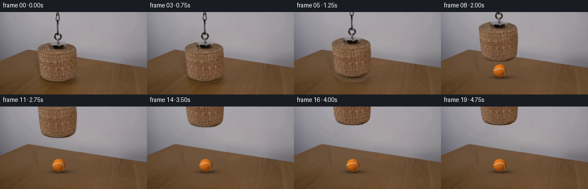

CODING AGENTS AS PIXEL WORLD MODELS
traex/GPT-6.1-Sol · 0171
点击播放 · 原生 RGB 像素
逐轮保存的候选
回放视频、检查图与代码变化。
每份候选均可单独播放。实际图片检查记录在下方工具轨迹中。
候选 01播放与检查图
点击播放 · 原生 RGB 像素


展开代码变化
--- 上一保存版本
+++ 本次保存版本
@@ -0,0 +1,163 @@
+from pathlib import Path
+import numpy as np
+from PIL import Image, ImageDraw
+import cv2
+from scipy.ndimage import gaussian_filter
+import artifact_io
+
+ROOT = Path(__file__).resolve().parent
+H,W=144,256
+Y,X=np.mgrid[:H,:W].astype(np.float64)
+
+
+def poly_surface(rgb, valid, degree):
+ xx=(X-128)/128; yy=(Y-72)/72
+ terms=[xx**i*yy**j for i in range(degree+1) for j in range(degree+1-i)]
+ A=np.stack(terms,axis=-1)
+ aa=A[valid]; bb=rgb[valid]
+ weights=np.ones(len(aa))
+ for _ in range(4):
+ co=np.linalg.lstsq(aa*weights[:,None],bb*weights[:,None],rcond=None)[0]
+ residual=np.linalg.norm(aa@co-bb,axis=1)
+ weights=np.minimum(1,5/np.maximum(residual,1e-3))
+ return A@co
+
+
+def polygon_alpha(points,scale=8):
+ out=Image.new('L',(W*scale,H*scale),0)
+ d=ImageDraw.Draw(out)
+ d.polygon([(round((x+.5)*scale),round((y+.5)*scale)) for x,y in points],fill=255)
+ return np.asarray(out.resize((W,H),Image.Resampling.LANCZOS)).astype(float)/255
+
+
+def make_plate_and_object(im):
+ # Contour of the inverted wicker basket, including its metal attachment.
+ outline=[(84,53.35),(95,53.2),(108,53.6),(117,54.4),(123.8,56.5),
+ (127.8,58.5),(130.4,60.5),(132.1,63.1),(132.6,66),
+ (132.8,73),(133.5,77.5),(133.7,81),(133.2,89),
+ (132.6,101),(131.9,108),(130.2,112.5),(127.4,116),
+ (123.5,118.3),(118,120.7),(110.5,121.8),(100.2,122),
+ (91,121.5),(83.5,120),(78.8,118.4),(75.5,116.5),
+ (73,113.5),(71.2,110.5),(69.6,103.5),(68.5,95),
+ (67.5,86),(66.7,78.5),(65.9,70),(65.4,64.5),
+ (66,61.6),(68,59.5),(70.4,58.1),(73.2,56.8),
+ (78.6,54.8)]
+ basket=polygon_alpha(outline)
+ # Wall/table junction inferred from the unobstructed continuation of the edge.
+ edge=np.where(X<49,85.5-.408*X,57.2+.159*X)
+ wall=Y<edge-2.8
+ exclusion=(basket>.005)|((X>91)&(X<112)&(Y<57))
+ wall_valid=wall&~exclusion&(im[:,:,0]-im[:,:,2]<20)
+ wall_surface=poly_surface(im,wall_valid,5)
+ table_valid=(Y>edge+2)&~((X>45)&(X<150)&(Y>72))&~(basket>.001)
+ table_surface=poly_surface(im,table_valid,4)
+ rng=np.random.default_rng(2026)
+ noise=rng.normal(0,.85,(H,W))
+ noise=gaussian_filter(noise,.45)
+ # Fine wood texture transplanted as a residual, not as a differently lit patch.
+ sx=np.minimum(X.astype(int)+85,W-1)
+ donor=im[np.arange(H)[:,None],sx]-table_surface[np.arange(H)[:,None],sx]
+ donor=np.clip(donor,-3.0,3.0)
+ table_surface+=donor*.55+noise[:,:,None]*.7
+ wall_surface+=noise[:,:,None]*.7
+ edge_alpha=np.clip((Y-edge+.65)/1.4,0,1)
+ surface=wall_surface*(1-edge_alpha[:,:,None])+table_surface*edge_alpha[:,:,None]
+ # Remove only the basket footprint and the soft shadow cast on the tabletop.
+ core=cv2.dilate((basket>.005).astype(np.uint8),np.ones((3,3),np.uint8)).astype(float)
+ sh=np.exp(-.5*(((X-99)/27)**2+((Y-120)/13)**2))
+ sh*=np.clip((Y-edge-3)/5,0,1)
+ shadow_erase=np.clip(sh*2.8,0,1)
+ restore=np.maximum(core,shadow_erase)
+ clean=im*(1-restore[:,:,None])+surface*restore[:,:,None]
+ # Tight metal and cord matte uses measured contrast against the neutral wall.
+ cord_region=(X>=93)&(X<=108)&(Y<57)
+ cw=im.copy()
+ mask=cord_region.astype(np.uint8)
+ cw=cv2.inpaint(im.astype(np.uint8),mask,5,cv2.INPAINT_TELEA).astype(float)
+ clean=np.where(cord_region[:,:,None],cw,clean)
+ rope_alpha=np.clip((cw[:,:,0]-im[:,:,0])/38,0,1)*cord_region
+ # Preserve thin dark chain links and the steel ring, including their holes.
+ alpha=np.maximum(basket,rope_alpha)
+ # Unpremultiply against the reconstructed old background to avoid gray halos.
+ premult=im-clean*(1-alpha[:,:,None])
+ premult=np.clip(premult,0,255*alpha[:,:,None])
+ original_shadow=(im-clean)*(1-alpha[:,:,None])
+ original_shadow*=((Y>edge+1)&(restore>.005))[:,:,None]
+ return np.clip(clean,0,255),alpha,premult,original_shadow,basket
+
+
+def ball_layer():
+ S=4
+ y,x=np.mgrid[:H*S,:W*S].astype(float)
+ x=(x+.5)/S-.5; y=(y+.5)/S-.5
+ cx,cy,rad=102.3,102.3,11.5
+ nx=(x-cx)/rad; ny=(y-cy)/rad
+ r2=nx*nx+ny*ny
+ nz=np.sqrt(np.maximum(0,1-r2))
+ coverage=(r2<1).astype(float)
+ light=np.array([-.48,-.61,.63]);light/=np.linalg.norm(light)
+ diffuse=np.maximum(0,nx*light[0]+ny*light[1]+nz*light[2])
+ lum=.52+.48*diffuse
+ rgb=np.stack([224*lum+7*nz,112*lum+12*diffuse,20*lum+14*diffuse],axis=-1)
+ rng=np.random.default_rng(909)
+ fuzz=rng.normal(0,2.2,coverage.shape)
+ rgb+=fuzz[:,:,None]*np.array([1,.75,.35])
+ seam=Image.new('L',(W*S,H*S),0)
+ draw=ImageDraw.Draw(seam)
+ phi=np.linspace(0,2*np.pi,1000)
+ lat=.49*np.cos(2*phi)
+ p=np.array([np.cos(lat)*np.cos(phi),np.sin(lat),np.cos(lat)*np.sin(phi)])
+ az=.52; ay=.22
+ Rz=np.array([[np.cos(az),-np.sin(az),0],[np.sin(az),np.cos(az),0],[0,0,1]])
+ Ry=np.array([[np.cos(ay),0,np.sin(ay)],[0,1,0],[-np.sin(ay),0,np.cos(ay)]])
+ p=Rz@Ry@p
+ coords=[]
+ for k in range(p.shape[1]):
+ if p[2,k]>.015:
+ coords.append(((cx+rad*p[0,k]+.5)*S,(cy+rad*p[1,k]+.5)*S))
+ else:
+ if len(coords)>1: draw.line(coords,fill=255,width=4,joint='curve')
+ coords=[]
+ if len(coords)>1: draw.line(coords,fill=255,width=4,joint='curve')
+ sa=np.asarray(seam).astype(float)/255*coverage
+ seam_color=lum[:,:,None]*np.array([230,217,176])+fuzz[:,:,None]*.65
+ rgb=rgb*(1-sa[:,:,None])+seam_color*sa[:,:,None]
+ # Soft contact shadow and a slight rightward extension from the light.
+ shadow=.39*np.exp(-.5*(((x-cx-3)/12.5)**2+((y-(cy+rad-.3))/2.4)**2))
+ shadow+=.24*np.exp(-.5*(((x-cx)/7.8)**2+((y-(cy+rad-.1))/1.0)**2))
+ small=lambda a: cv2.resize(a.astype(np.float32),(W,H),interpolation=cv2.INTER_AREA)
+ return small(rgb*coverage[:,:,None]),small(coverage),small(np.clip(shadow,0,.6))
+
+
+def generate():
+ im=np.asarray(Image.open(ROOT/'first_frame.png').convert('RGB')).astype(float)
+ clean,alpha,obj,old_shadow,basket=make_plate_and_object(im)
+ bcol,ba,bsh=ball_layer()
+ # A brief covered hold, then one smooth pull vertically upward, with a gentle stop.
+ lifts=[0,0,0,.9,3.8,8.8,16.1,25.5,36.4,48.2,60.3,72.2,83.2,92.8,100.8,106.9,110.7,112,112,112]
+ frames=[]
+ for i,lift in enumerate(lifts):
+ if lift==0:
+ frames.append(im.astype(np.uint8));continue
+ canvas=clean.copy()
+ # The original basket's contact shadow dissipates as its height increases.
+ canvas+=old_shadow*np.exp(-lift/12)
+ canvas*=1-bsh[:,:,None]
+ canvas=canvas*(1-ba[:,:,None])+bcol
+ dx=.6*np.sin(i*.43)*min(lift/25,1)*max(0,(115-lift)/115)
+ M=np.array([[1,0,dx],[0,1,-lift]],dtype=np.float32)
+ a=cv2.warpAffine(alpha.astype(np.float32),M,(W,H),flags=cv2.INTER_LINEAR,borderMode=cv2.BORDER_CONSTANT)
+ o=cv2.warpAffine(obj.astype(np.float32),M,(W,H),flags=cv2.INTER_LINEAR,borderMode=cv2.BORDER_CONSTANT)
+ canvas=canvas*(1-a[:,:,None])+o
+ frames.append(np.clip(np.rint(canvas),0,255).astype(np.uint8))
+ frames=np.stack(frames)
+ assert np.array_equal(frames[0],im.astype(np.uint8))
+ artifact_io.save(frames,ROOT)
+ debug=ROOT/'.tmp';debug.mkdir(exist_ok=True)
+ Image.fromarray(np.clip(clean,0,255).astype(np.uint8)).save(debug/'clean_plate.png')
+ Image.fromarray((alpha*255).astype(np.uint8)).save(debug/'object_alpha.png')
+ np.save(debug/'candidate_frames.npy',frames)
+ return frames
+
+if __name__=='__main__':
+ generate()
候选 02播放与检查图
点击播放 · 原生 RGB 像素

展开代码变化
--- 上一保存版本
+++ 本次保存版本
@@ -50,7 +50,7 @@
wall_valid=wall&~exclusion&(im[:,:,0]-im[:,:,2]<20)
wall_surface=poly_surface(im,wall_valid,5)
table_valid=(Y>edge+2)&~((X>45)&(X<150)&(Y>72))&~(basket>.001)
- table_surface=poly_surface(im,table_valid,4)
+ table_surface=poly_surface(im,table_valid,3)
rng=np.random.default_rng(2026)
noise=rng.normal(0,.85,(H,W))
noise=gaussian_filter(noise,.45)
@@ -73,7 +73,7 @@
cord_region=(X>=93)&(X<=108)&(Y<57)
cw=im.copy()
mask=cord_region.astype(np.uint8)
- cw=cv2.inpaint(im.astype(np.uint8),mask,5,cv2.INPAINT_TELEA).astype(float)
+ cw=cv2.inpaint(np.clip(clean,0,255).astype(np.uint8),mask,5,cv2.INPAINT_TELEA).astype(float)
clean=np.where(cord_region[:,:,None],cw,clean)
rope_alpha=np.clip((cw[:,:,0]-im[:,:,0])/38,0,1)*cord_region
# Preserve thin dark chain links and the steel ring, including their holes.
@@ -134,7 +134,7 @@
clean,alpha,obj,old_shadow,basket=make_plate_and_object(im)
bcol,ba,bsh=ball_layer()
# A brief covered hold, then one smooth pull vertically upward, with a gentle stop.
- lifts=[0,0,0,.9,3.8,8.8,16.1,25.5,36.4,48.2,60.3,72.2,83.2,92.8,100.8,106.9,110.7,112,112,112]
+ lifts=[0,0,0,.9,3.8,8.8,16.1,25.5,36.4,47.8,58.4,67.8,75.7,82.0,86.5,89.1,90,90,90,90]
frames=[]
for i,lift in enumerate(lifts):
if lift==0:
可观测工具轨迹
实际执行的命令与返回图片。
命令 1exit 0
/bin/bash -lc "ls -la && cat prompt.txt && printf '\\n---RULES---\\n' && cat GENERATION_RULES.md"
命令 2exit 0
/bin/bash -lc "cat artifact_io.py && python - <<'PY'
from PIL import Image
import numpy as np
im=Image.open('first_frame.png'); print(im.size)
a=np.array(im);print('range',a.min((0,1)),a.max((0,1)))
# color quantization coarse ASCII
from collections import Counter
b=np.array(im.resize((64,36)))
colors={' ':np.array([225,225,225]),'.':np.array([140,140,140]),'#':np.array([25,25,25]),'o':np.array([205,130,50]),'O':np.array([246,90,15]),'b':np.array([83,64,40]),'r':np.array([138,90,55]),'t':np.array([170,170,150])}
for row in b:
print(''.join(min(colors,key=lambda k:np.sum((p.astype(float)-colors[k])**2)) for p in row))
print(Counter(map(tuple,(a//32*32).reshape(-1,3))).most_common(20))
PY"命令 3exit 0
/bin/bash -lc "python - <<'PY'
from PIL import Image
import numpy as np
im=Image.open('first_frame.png');a=np.asarray(im)
# detailed 128x72 classify colors. background grayscale, wood mid brown, basket often lighter
b=np.array(im.resize((128,72))).astype(float)
for y,row in enumerate(b):
s=''
for r,g,bl in row:
if max(r,g,bl)-min(r,g,bl)<22:
c=' ' if r>160 else '.' if r>140 else ':' if r>115 else '=' if r>80 else 'X' if r>40 else '@'
else:
c='O' if r>1.6*g and r>150 else '+' if r>160 else 'o' if r>140 else 'a' if r>120 else 'w' if r>100 else 'v' if r>80 else 'x' if r>50 else '#'
s+=c
print(f'{y*2:3} {s}')
print('\\nSAMPLES')
for y in [0,30,40,48,52,56,60,64,72,80,88,96,104,112,120,128,136,143]:
print('Y',y,[(x,a[y,x].tolist()) for x in [20,40,60,64,68,80,90,100,110,120,130,140,150,160,170,180,200,220,240]])
PY"命令 4exit 0
/bin/bash -lc "python - <<'PY'
from PIL import Image
import numpy as np
from scipy.ndimage import gaussian_filter
im=np.array(Image.open('first_frame.png')).astype(float)
# Determine wall and basket near contour with color ratio and difference over vertical
for y in range(49,122):
a=im[y]
rr=a[:,0]-a[:,2]
# transitions basket edges measured relative smooth tabletop
cand=np.where((rr>28)&(np.arange(256)>60)&(np.arange(256)<140))[0]
print(y, 'color', ((cand.min(),cand.max()) if len(cand) else None), '|', ' '.join(f'{x}:{tuple(im[y,x].astype(int))}' for x in [63,64,65,66,67,68,69,70,71,72,73,74,128,129,130,131,132,133,134,135,136]))
PY"命令 5exit 0
/bin/bash -lc "python - <<'PY'
from PIL import Image
import numpy as np
im=np.array(Image.open('first_frame.png')).astype(float)
# basket top and hook chroma / gray numeric map x60:140 y30:70
for y in range(30,70):
s=''
for x in range(60,141):
r,g,b=im[y,x]
if r-b>25: c='o' if r>130 else 'a' if r>105 else 'w' if r>80 else 'x' if r>50 else '#'
elif r-g>15: c='r'
else: c=' ' if r>155 else '.' if r>135 else ':' if r>110 else '=' if r>85 else 'X' if r>45 else '@'
s+=c
print(f'{y:3} {s}')
print('basket bottom x60 to140')
for y in range(100,124):
s=''
for x in range(60,141):
r,g,b=im[y,x]
s+= 'O' if r>150 else 'o' if r>130 else 'a' if r>115 else 'w' if r>100 else 'v' if r>85 else 'x' if r>65 else '#'
print(f'{y:3} {s}')
PY"命令 6exit 0
/bin/bash -lc "python - <<'PY'
import numpy as np
from PIL import Image
from scipy.ndimage import gaussian_filter
im=np.array(Image.open('first_frame.png')).astype(float)
print('table edge detection (r-b > 28)')
for x in range(0,256,4):
ys=np.where((im[:,x,0]-im[:,x,2]>28)&(np.arange(144)>45))[0]
print(x,ys.min() if len(ys) else None,end='; ')
print('\\nContour measured from RGB + gradient. rows')
for y in range(52,124):
a=im[y];dx=np.linalg.norm(np.diff(a,axis=0),axis=1)
cand=[(x,round(dx[x],1)) for x in range(60,76)];cand2=[(x,round(dx[x],1)) for x in range(124,138)]
if y<80 or y>108: print(y, sorted(cand,key=lambda t:t[1],reverse=True)[:3], sorted(cand2,key=lambda t:t[1],reverse=True)[:3])
PY"命令 7exit 0
/bin/bash -lc "python - <<'PY'
import numpy as np
from PIL import Image
im=np.array(Image.open('first_frame.png')).astype(float)
# Red intensity map basket 64:139 full char/pixel. left and right silhouette
chars=' .:-=+*#%@'
for y in range(65,123):
s=''
for x in range(60,141):
r=im[y,x,0];s+=chars[int(np.clip((r-60)/105*9,0,9))]
print(f'{y:3} {s}')
# moving object top cord numeric extremes threshold gray difference near x90:114
print('chroma cord region')
for y in range(0,54):
print(y,[(x,tuple(im[y,x].astype(int))) for x in range(94,107) if im[y,x,0]<125 or (im[y,x,0]-im[y,x,2])>20])
PY"命令 8exit 0
/bin/bash -lc "python - <<'PY' for p in ['cv2','scipy','PIL','numpy']: try: m=__import__(p); print(p, m.__version__) except:pass PY"
命令 9exit 0
/bin/bash -lc "cat > generate.py <<'PY'
from pathlib import Path
import numpy as np
from PIL import Image, ImageDraw
import cv2
from scipy.ndimage import gaussian_filter
import artifact_io
ROOT = Path(__file__).resolve().parent
H,W=144,256
Y,X=np.mgrid[:H,:W].astype(np.float64)
def poly_surface(rgb, valid, degree):
xx=(X-128)/128; yy=(Y-72)/72
terms=[xx**i*yy**j for i in range(degree+1) for j in range(degree+1-i)]
A=np.stack(terms,axis=-1)
aa=A[valid]; bb=rgb[valid]
weights=np.ones(len(aa))
for _ in range(4):
co=np.linalg.lstsq(aa*weights[:,None],bb*weights[:,None],rcond=None)[0]
residual=np.linalg.norm(aa@co-bb,axis=1)
weights=np.minimum(1,5/np.maximum(residual,1e-3))
return A@co
def polygon_alpha(points,scale=8):
out=Image.new('L',(W*scale,H*scale),0)
d=ImageDraw.Draw(out)
d.polygon([(round((x+.5)*scale),round((y+.5)*scale)) for x,y in points],fill=255)
return np.asarray(out.resize((W,H),Image.Resampling.LANCZOS)).astype(float)/255
def make_plate_and_object(im):
# Contour of the inverted wicker basket, including its metal attachment.
outline=[(84,53.35),(95,53.2),(108,53.6),(117,54.4),(123.8,56.5),
(127.8,58.5),(130.4,60.5),(132.1,63.1),(132.6,66),
(132.8,73),(133.5,77.5),(133.7,81),(133.2,89),
(132.6,101),(131.9,108),(130.2,112.5),(127.4,116),
(123.5,118.3),(118,120.7),(110.5,121.8),(100.2,122),
(91,121.5),(83.5,120),(78.8,118.4),(75.5,116.5),
(73,113.5),(71.2,110.5),(69.6,103.5),(68.5,95),
(67.5,86),(66.7,78.5),(65.9,70),(65.4,64.5),
(66,61.6),(68,59.5),(70.4,58.1),(73.2,56.8),
(78.6,54.8)]
basket=polygon_alpha(outline)
# Wall/table junction inferred from the unobstructed continuation of the edge.
edge=np.where(X<49,85.5-.408*X,57.2+.159*X)
wall=Y<edge-2.8
exclusion=(basket>.005)|((X>91)&(X<112)&(Y<57))
wall_valid=wall&~exclusion&(im[:,:,0]-im[:,:,2]<20)
wall_surface=poly_surface(im,wall_valid,5)
table_valid=(Y>edge+2)&~((X>45)&(X<150)&(Y>72))&~(basket>.001)
table_surface=poly_surface(im,table_valid,4)
rng=np.random.default_rng(2026)
noise=rng.normal(0,.85,(H,W))
noise=gaussian_filter(noise,.45)
# Fine wood texture transplanted as a residual, not as a differently lit patch.
sx=np.minimum(X.astype(int)+85,W-1)
donor=im[np.arange(H)[:,None],sx]-table_surface[np.arange(H)[:,None],sx]
donor=np.clip(donor,-3.0,3.0)
table_surface+=donor*.55+noise[:,:,None]*.7
wall_surface+=noise[:,:,None]*.7
edge_alpha=np.clip((Y-edge+.65)/1.4,0,1)
surface=wall_surface*(1-edge_alpha[:,:,None])+table_surface*edge_alpha[:,:,None]
# Remove only the basket footprint and the soft shadow cast on the tabletop.
core=cv2.dilate((basket>.005).astype(np.uint8),np.ones((3,3),np.uint8)).astype(float)
sh=np.exp(-.5*(((X-99)/27)**2+((Y-120)/13)**2))
sh*=np.clip((Y-edge-3)/5,0,1)
shadow_erase=np.clip(sh*2.8,0,1)
restore=np.maximum(core,shadow_erase)
clean=im*(1-restore[:,:,None])+surface*restore[:,:,None]
# Tight metal and cord matte uses measured contrast against the neutral wall.
cord_region=(X>=93)&(X<=108)&(Y<57)
cw=im.copy()
mask=cord_region.astype(np.uint8)
cw=cv2.inpaint(im.astype(np.uint8),mask,5,cv2.INPAINT_TELEA).astype(float)
clean=np.where(cord_region[:,:,None],cw,clean)
rope_alpha=np.clip((cw[:,:,0]-im[:,:,0])/38,0,1)*cord_region
# Preserve thin dark chain links and the steel ring, including their holes.
alpha=np.maximum(basket,rope_alpha)
# Unpremultiply against the reconstructed old background to avoid gray halos.
premult=im-clean*(1-alpha[:,:,None])
premult=np.clip(premult,0,255*alpha[:,:,None])
original_shadow=(im-clean)*(1-alpha[:,:,None])
original_shadow*=((Y>edge+1)&(restore>.005))[:,:,None]
return np.clip(clean,0,255),alpha,premult,original_shadow,basket
def ball_layer():
S=4
y,x=np.mgrid[:H*S,:W*S].astype(float)
x=(x+.5)/S-.5; y=(y+.5)/S-.5
cx,cy,rad=102.3,102.3,11.5
nx=(x-cx)/rad; ny=(y-cy)/rad
r2=nx*nx+ny*ny
nz=np.sqrt(np.maximum(0,1-r2))
coverage=(r2<1).astype(float)
light=np.array([-.48,-.61,.63]);light/=np.linalg.norm(light)
diffuse=np.maximum(0,nx*light[0]+ny*light[1]+nz*light[2])
lum=.52+.48*diffuse
rgb=np.stack([224*lum+7*nz,112*lum+12*diffuse,20*lum+14*diffuse],axis=-1)
rng=np.random.default_rng(909)
fuzz=rng.normal(0,2.2,coverage.shape)
rgb+=fuzz[:,:,None]*np.array([1,.75,.35])
seam=Image.new('L',(W*S,H*S),0)
draw=ImageDraw.Draw(seam)
phi=np.linspace(0,2*np.pi,1000)
lat=.49*np.cos(2*phi)
p=np.array([np.cos(lat)*np.cos(phi),np.sin(lat),np.cos(lat)*np.sin(phi)])
az=.52; ay=.22
Rz=np.array([[np.cos(az),-np.sin(az),0],[np.sin(az),np.cos(az),0],[0,0,1]])
Ry=np.array([[np.cos(ay),0,np.sin(ay)],[0,1,0],[-np.sin(ay),0,np.cos(ay)]])
p=Rz@Ry@p
coords=[]
for k in range(p.shape[1]):
if p[2,k]>.015:
coords.append(((cx+rad*p[0,k]+.5)*S,(cy+rad*p[1,k]+.5)*S))
else:
if len(coords)>1: draw.line(coords,fill=255,width=4,joint='curve')
coords=[]
if len(coords)>1: draw.line(coords,fill=255,width=4,joint='curve')
sa=np.asarray(seam).astype(float)/255*coverage
seam_color=lum[:,:,None]*np.array([230,217,176])+fuzz[:,:,None]*.65
rgb=rgb*(1-sa[:,:,None])+seam_color*sa[:,:,None]
# Soft contact shadow and a slight rightward extension from the light.
shadow=.39*np.exp(-.5*(((x-cx-3)/12.5)**2+((y-(cy+rad-.3))/2.4)**2))
shadow+=.24*np.exp(-.5*(((x-cx)/7.8)**2+((y-(cy+rad-.1))/1.0)**2))
small=lambda a: cv2.resize(a.astype(np.float32),(W,H),interpolation=cv2.INTER_AREA)
return small(rgb*coverage[:,:,None]),small(coverage),small(np.clip(shadow,0,.6))
def generate():
im=np.asarray(Image.open(ROOT/'first_frame.png').convert('RGB')).astype(float)
clean,alpha,obj,old_shadow,basket=make_plate_and_object(im)
bcol,ba,bsh=ball_layer()
# A brief covered hold, then one smooth pull vertically upward, with a gentle stop.
lifts=[0,0,0,.9,3.8,8.8,16.1,25.5,36.4,48.2,60.3,72.2,83.2,92.8,100.8,106.9,110.7,112,112,112]
frames=[]
for i,lift in enumerate(lifts):
if lift==0:
frames.append(im.astype(np.uint8));continue
canvas=clean.copy()
# The original basket's contact shadow dissipates as its height increases.
canvas+=old_shadow*np.exp(-lift/12)
canvas*=1-bsh[:,:,None]
canvas=canvas*(1-ba[:,:,None])+bcol
dx=.6*np.sin(i*.43)*min(lift/25,1)*max(0,(115-lift)/115)
M=np.array([[1,0,dx],[0,1,-lift]],dtype=np.float32)
a=cv2.warpAffine(alpha.astype(np.float32),M,(W,H),flags=cv2.INTER_LINEAR,borderMode=cv2.BORDER_CONSTANT)
o=cv2.warpAffine(obj.astype(np.float32),M,(W,H),flags=cv2.INTER_LINEAR,borderMode=cv2.BORDER_CONSTANT)
canvas=canvas*(1-a[:,:,None])+o
frames.append(np.clip(np.rint(canvas),0,255).astype(np.uint8))
frames=np.stack(frames)
assert np.array_equal(frames[0],im.astype(np.uint8))
artifact_io.save(frames,ROOT)
debug=ROOT/'.tmp';debug.mkdir(exist_ok=True)
Image.fromarray(np.clip(clean,0,255).astype(np.uint8)).save(debug/'clean_plate.png')
Image.fromarray((alpha*255).astype(np.uint8)).save(debug/'object_alpha.png')
np.save(debug/'candidate_frames.npy',frames)
return frames
if __name__=='__main__':
generate()
PY
python generate.py"命令 10exit 0
/bin/bash -lc "python - <<'PY'
import numpy as np
from PIL import Image
im=np.array(Image.open('first_frame.png')).astype(float)
cl=np.array(Image.open('.tmp/clean_plate.png')).astype(float)
fs=np.load('.tmp/candidate_frames.npy')
print('clean range',cl.min((0,1)),cl.max((0,1)))
for y in [50,54,57,60,64,67,70,72,76,80,90,100,110,120,130]:
print(y,[(x,cl[y,x].astype(int).tolist()) for x in [60,70,80,90,100,110,120,130,140,150]])
for f in [3,5,8,12,17]:
b=np.asarray(Image.fromarray(fs[f]).resize((96,54))).astype(float)
chars=' .:-=+*#%@'
print('\\nFRAME',f)
for yy,row in enumerate(b):
s=''
for r,g,bl in row:
if r-g>50 and r>150:c='O'
elif r-bl>25:c=chars[int(np.clip((r-45)/135*9,0,9))]
else:c=' ' if r>155 else '.' if r>140 else ':' if r>110 else 'x' if r>70 else 'X' if r>30 else '@'
s+=c
print(s)
print('differences',[round(np.abs(fs[i].astype(float)-fs[i-1]).mean(),3) for i in range(1,20)])
PY"命令 11exit 0
/bin/bash -lc "python - <<'PY'
import generate as g
import numpy as np
from PIL import Image
im=np.array(Image.open('first_frame.png')).astype(float)
edge=np.where(g.X<49,85.5-.408*g.X,57.2+.159*g.X)
v=(g.Y>edge+2)&~((g.X>45)&(g.X<150)&(g.Y>72))&~((g.X>64)&(g.X<135)&(g.Y>52)&(g.Y<125))
for d in [2,3,4]:
p=g.poly_surface(im,v,d)
print('D',d)
for y in [70,76,80,90,100,110,120,130]:print(y,np.round(p[y,[60,80,100,120,140],0],1))
PY"命令 12exit 0
/bin/bash -lc "python - <<'PY'
p='generate.py'
s=open(p).read().replace('table_surface=poly_surface(im,table_valid,4)','table_surface=poly_surface(im,table_valid,3)').replace(\"cw=cv2.inpaint(im.astype(np.uint8),mask,5,cv2.INPAINT_TELEA).astype(float)\",\"cw=cv2.inpaint(np.clip(clean,0,255).astype(np.uint8),mask,5,cv2.INPAINT_TELEA).astype(float)\")
s=s.replace('lifts=[0,0,0,.9,3.8,8.8,16.1,25.5,36.4,48.2,60.3,72.2,83.2,92.8,100.8,106.9,110.7,112,112,112]', 'lifts=[0,0,0,.9,3.8,8.8,16.1,25.5,36.4,47.8,58.4,67.8,75.7,82.0,86.5,89.1,90,90,90,90]')
open(p,'w').write(s)
PY
python generate.py
python - <<'PY'
from PIL import Image
import numpy as np
im=np.array(Image.open('.tmp/clean_plate.png'))
print([(y,im[y,100].tolist()) for y in range(30,60)])
print('BALL image')
a=np.array(Image.open('frames/19.png'))
chars=' .:-=+*#%@'
for y in range(89,117):
s=''
for x in range(88,117):
r,g,b=a[y,x].astype(float)
if r-g>50:c='O' if r>200 else 'o' if r>160 else 'a'
elif r>170 and g>155:c='S'
else:c=chars[int(np.clip((r-45)/170*9,0,9))]
s+=c
print(s)
print('objects verification')
for y in [53,54,55,56]: print(y,[(x,im[y,x].tolist()) for x in range(92,113,3)])
print('submitted',len(list(__import__('pathlib').Path('frames').glob('*.png'))))
PY"命令 13exit 0
/bin/bash -lc "python - <<'PY'
from pathlib import Path
from PIL import Image
import numpy as np
frames=np.stack([np.array(Image.open(f'frames/{i:02d}.png')) for i in range(20)])
source=np.array(Image.open('first_frame.png').convert('RGB'))
assert frames.shape==(20,144,256,3)
assert frames.dtype==np.uint8
assert np.array_equal(frames[0],source)
with np.load('pixels.npz') as f:
p=f['pixels'];assert p.shape==(144,256,20)
decoded=np.stack([(p>>16)&255,(p>>8)&255,p&255],axis=-1).transpose(2,0,1,3).astype('uint8')
assert np.array_equal(decoded,frames)
print('Validated: 20 RGB frames, 256Ã144, first frame exact, saved array matches images.')
print('Saved:', ', '.join(p.name for p in Path('.').iterdir() if p.is_file()))
PY"保存候选 2 份；完成命令 13 次；可验证图片返回 0 张。原始 API 响应与完整日志保留在本地。